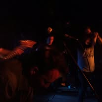
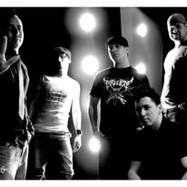

2006
2006Éponyme
- Fléau Destructeur
- Sans Raison
- Imaginaire Incontournable
- Lourd Silence
- D.R.E.V.E.C
- D-31
- L'Ataraxie des Sang
- Statix
- Amnésie
- L'Humanité Court au Suicide
- Diagnostic Tragique
- Industrie Hell
- Workoholique
Metal mélodique · Saint-Jean-sur-Richelieu, QC
Groupe de metal, depuis 2005

Avant d'être OK VOLCA, le quintette chantait en anglais sous le nom Haang Upps. Le virage vers le français a changé la donne : quelques titres ont grimpé au sommet des palmarès francophones sur MusiquePlus et sur les ondes de nombreuses radios indépendantes.
Le premier album éponyme paraît en 2006 sous étiquette Slam Disques, suivi de Fréquence Trémor en 2011. Entre les deux, le groupe roule sa bosse à travers le Québec — du Rockfest de Montebello à Woodstock en Beauce, en passant par des salles mythiques comme les Foufounes Électriques et le Spectrum de Montréal.
Puis, silence. Plus de dix ans passent. En mai 2024, OK VOLCA refait surface pour un retour remarqué au Festival Sève. La même année, le groupe boucle une boucle : un dernier concert avec Louis au chant, filmé à la boutique Rookery — une page qui se tourne après près de deux décennies de bruit et de fureur.
2006 2011
2011En 2020, OK VOLCA et Haang Upps unissent leurs forces pour le titre « Ouvre toé les yeux ».
Chant
Chant, guitare
Guitare, effets
Batterie
Basse (Éponyme, 2006)
Basse (Fréquence Trémor, 2011)

